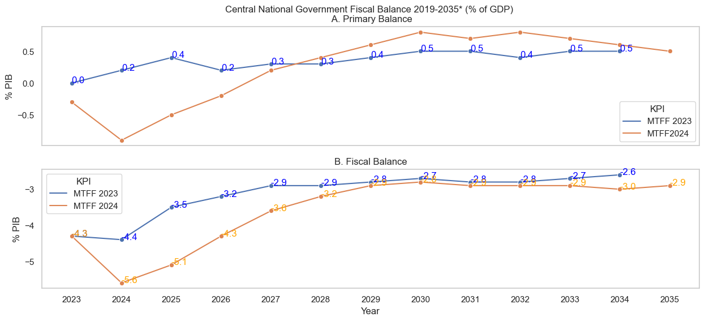

Maria Camila Gomez Fernandez | LinkedIn | GitHub | Portfolio
The project aims to present Colombia's medium-term fiscal outlook based on the 2024 Medium-Term Fiscal Framework (MTFF) projections and answer the question: Is Colombia's medium-term macroeconomic and fiscal scenario reliable to ensure debt sustainability?
To better understand the project, it is important to note that the Medium-Term Fiscal Framework is the macroeconomic and fiscal roadmap the National Government uses for the next 10 years. This document is legally mandated (Article 1 of Law 819 of 2003), is published every June, and serves as a primary input for discussions with investors, credit rating agencies, and institutions, as well as for debates in Congress and with other stakeholders.
As an advisor to the Ministry of Finance, I intend to apply the knowledge gained during the course. I deepened my understanding of graph construction in Python to visualise the medium-term projected results.
During the process, several challenges arose, some related to data accessibility and others related to graph construction. The Ministry of Finance's institutional website was recently updated, so I had to rely on data I had downloaded at the beginning of the project, as it is currently unavailable on the Ministry's website.
However, all the data sources are from the Ministry of Finance and Public Credit of Colombia, which is legally obligated to publish this information periodically to promote transparency in public finances. (MinHacienda)
The analytical challenges were numerous:
The most relevant data include fiscal and primary balances, gross and net debt, Central National and General Government revenues and expenditures, and the current account balance. This data is critical for visualising the scenario that ensures medium-term fiscal stability and debt sustainability in strict compliance with the Fiscal Rule. For more information about the definitions mentioned above, go to the glossary.
In conclusion, data visualisation tools are handy, particularly in environments with technical language. It is highly beneficial to systematise a webpage to include the content shown here and serve as input for various discussions. Building the graphs was challenging; however, the information needed to solve doubts is readily available online.
As a technical conclusion of the presented scenario, Colombia's medium-term economic outlook reflects a comprehensive strategy to foster growth, maintain fiscal sustainability, and address external imbalances.
The country is undergoing productive transformation, with an economic growth projection of 3.1%, driven by the expansion of non-traditional and service sectors alongside increased infrastructure investment. Fiscal policies emphasise sustainability through adherence to the Fiscal Rule, reduction of fiscal deficits, and focus on revenue growth and expenditure management. Simultaneously, efforts to diversify exports and attract foreign direct investment will support external balance and stabilize net external liabilities.
Finally, public debt indicators demonstrate a commitment to gradual reduction, reinforcing fiscal discipline and economic stability. Together, these strategies ensure a resilient and sustainable trajectory for Colombia's economic development.
• Economic Growth: The Colombian economy is expected to grow at around 3.1% in the medium term, provided no additional disruptions occur. This performance would be supported by the strengthening of non-traditional and service sectors and a revival in construction (driven by increased public and private infrastructure investment). This scenario will be framed within a context of productive transformation, reflected in the implementation of the reindustrialisation policy and the energy transition plan.
• Current Account: The process of productive transformation would encourage growth in non-traditional and service exports, supporting the diversification of the country’s export basket and correcting the current account deficit. This imbalance, projected to converge to levels that allow stabilisation of net external liabilities in the medium term (2.3%), would be financed mainly through foreign direct investment flows concentrated in non-mining energy sectors.
• Fiscal Deficit: In 2023, the fiscal deficit of the Central National Government (CNG) was 4.3% of GDP, improving by 0.2 percentage points over the Fiscal Rule target and correcting by 1.0 percentage points compared to the previous year. For 2024, the fiscal deficit of the CNG is estimated to reach 5.6% of GDP, meeting the targets set by the Fiscal Rule. This figure is 1.4 percentage points higher than in 2023 and 0.3 percentage points above the projection in the updated Financial Plan. The increased fiscal deficit is mainly due to a reduction in projected total government revenues (primarily explained by the anticipated decline in tax collection), estimated to reach 17.1% of GDP. In response to this outlook, and with the commitment to preserving the sustainability of public finances, the national government decided to significantly adjust projected primary spending, which would decrease from 19.2% of GDP in 2023 to 18.0% of GDP in 2024.
The CNG will ensure the sustainability of public finances through continuous improvements in the primary balance, allowing for the maintenance of a declining trend in the fiscal deficit and public debt. The medium-term fiscal strategy will align with strict adherence to the Fiscal Rule's targets.
• Fiscal Revenues: The increase in revenues over the medium term will stem from higher tax and capital revenues, rising from 17.5% of GDP in 2025 to 19.7% in 2035, with non-tax revenues reaching 1.6% of GDP mainly due to transfers from the Central Bank and dividends from Ecopetrol.
• Fiscal Spending: The reduction in spending will focus on interest payments, decreasing by one percentage point between 2025 and the average for 2026 to 2035, while primary spending will follow a slightly increasing path toward levels of 22.1% of GDP.
• Public Debt: The net debt of the Central National Government (CNG) was 53.8% of GDP in 2023, 2.0 percentage points lower than projected, reflecting a commitment to fiscal sustainability. In 2024, net debt is expected to reach 55.3% of GDP, 1.7 percentage points below projections, while gross debt is anticipated to decrease by 2.2 percentage points of GDP compared to the updated financial plan. Over the medium term, net debt will gradually rise to a peak of 56.7% of GDP in 2028 before returning to a downward trajectory, aligning closely with the anchor at 55.4% of GDP by 2035.
• General Government in the Medium Term: The General Government (GG) balance will continue correcting in the medium term, shifting from a deficit of 3.8% of GDP in 2026 to 2.5% in 2035. Meanwhile, average primary surpluses of 1.3% of GDP between 2026 and 2035 would gradually reduce total, consolidated, and net debt to 58.9%, 53.3%, and 47.7% of GDP, respectively.